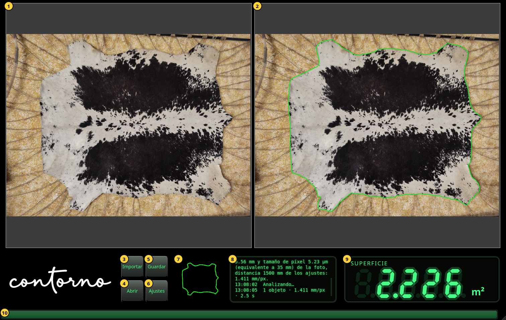
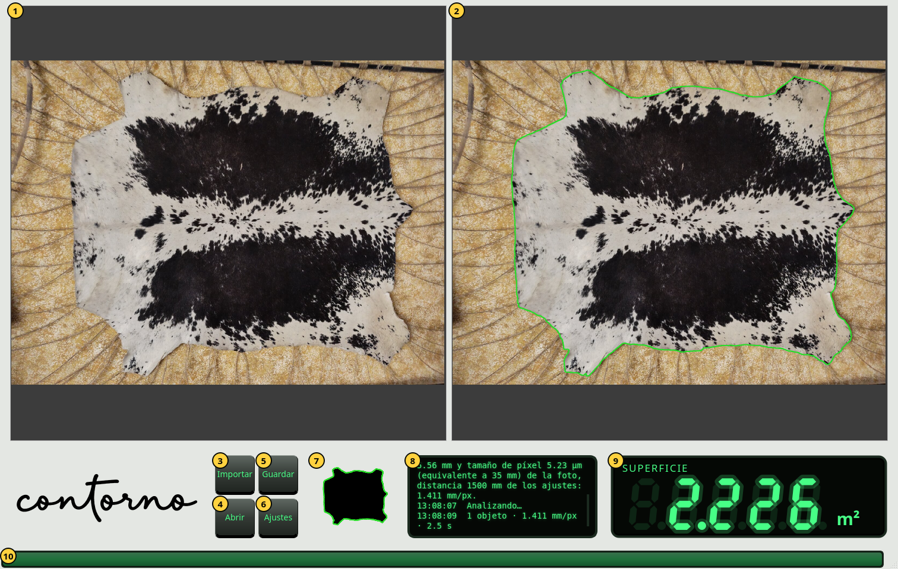

Primeros pasos
La ventana, sus partes, el zoom y el tema claro.
Abra Contorno Indicator. La ventana ocupa toda la pantalla. Antes de la primera foto el visor muestra guiones y el panel de mensajes dice Importe una foto de los objetos sobre la mesa.


- La foto tal como se tomó, sin tocar.
- La misma foto con el contorno encontrado, en verde. Dentro de este contorno se mide la superficie.
- Importar — elegir una foto del objeto sobre la mesa. Su análisis empieza enseguida.
- Abrir — volver a mostrar una inspección guardada. Vea Guardar y abrir inspecciones.
- Guardar — conservar la foto, la cámara, el contorno y la superficie en un solo archivo zip.
- Ajustes — la cámara, el idioma y el tema. Vea Ajustes.
- La máscara: el objeto tal como lo ve el análisis, en negro, con su contorno en verde.
- El panel de mensajes. Cada línea empieza con su hora. Dice qué se importó, de dónde salió la escala, cuántos objetos se encontraron y cuánto tardó.
- El visor: la superficie dentro del contorno.
- La barra de actividad. Avanza mientras se analiza la foto y queda llena un segundo cuando llega el resultado.
Zoom y desplazamiento
Gire la rueda del ratón sobre una foto para acercar o alejar en el punto del puntero. Arrastre para desplazarse. Las dos fotos se acercan y se desplazan juntas, de modo que el contorno de la derecha queda siempre sobre el mismo lugar que la foto de la izquierda. Una foto nueva se vuelve a mostrar entera.
El visor
El visor muestra la superficie en cm² por debajo de 0.1 m² (un decimal, por ejemplo 125.4 cm²) y en m² a partir de 0.1 m² (tres decimales, por ejemplo 2.226 m²). Cuando llega un valor nuevo, las cifras cuentan hasta él desde el anterior. Los números se escriben con punto, como en el programa.
- Guiones: todavía no hay foto, o el análisis falló. El panel de mensajes dice por qué.
- Cifras atenuadas: el valor de la foto anterior mientras se analiza la nueva. Un número atenuado nunca es el resultado actual.
- Cifras brillantes: la superficie dentro del contorno mostrado a la derecha.
El tema claro
La ventana es negra por defecto. La tecla del tema en Ajustes vuelve los paneles gris claro con el logotipo en negro; las fotos no cambian.

